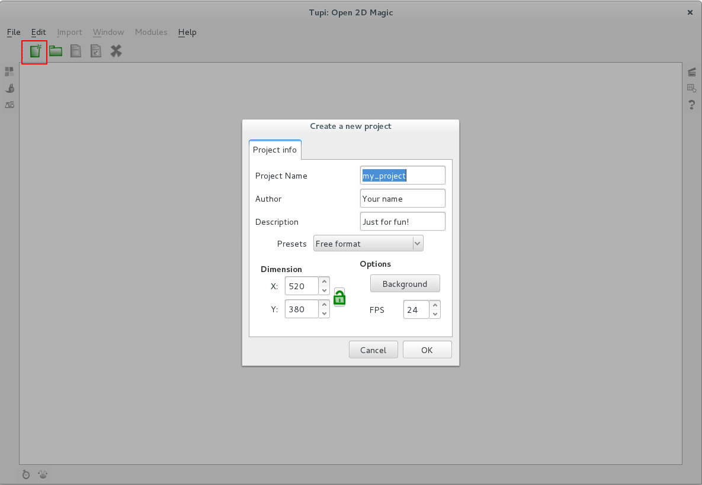
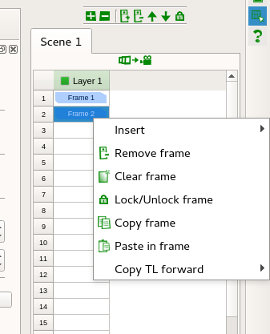
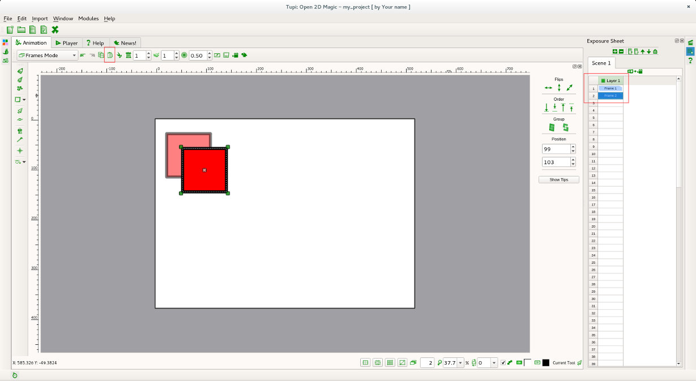

Um Início rápido no Tupi
1. Início e algumas opções básicas
1.1 Clique no botão para criar um novo projeto. A janela de novo projeto permite definir um nome para o projeto, seu autor, descrição, resolução, escolher uma cor de fundo e as FPS (frames por segundo) a utilizar.
1.2 A aplicação inicia logo na layer 1 da frame 1 da animação. Neste exemplo só vamos usar uma layer. Em cima, pode definir o número de frames seguintes e/ou anteriores que irão ser sobrepostas (onion skin) e o grau de opacidade da sobreposição. Para já, mantenha as opções de origem.
Na barra de ferramentas, nas ferramentas de desenho, escolha o quadrado.

1.3 Desenhe um quadrado no canto superior esquerdo do palco. Ative a ferramenta de seleção de objetos e clique em cima do quadrado que desenhou. O objeto ficou selecionado (ficou com quatro quadrados verdes nos cantos e uma cruz no centro). Utilize o botão de copiar (barra de ferramentas no topo) para copiar o objeto para a memória.
1.4 Na Exposure Sheet (X-sheet / folha de exposição), clique no segundo retângulo para criar a frame 2. Com esta frame 2 selecionada, clique em colar para colar o objeto quadrado nesta frame. Posicione o quadrado de forma similar à imagem. Com a ferramenta de seleção de objeto ativada, basta clicar no centro do objeto e arrastar para a posição desejada.
Repare que, estando na frame 2, consegue ver o quadrado da frame 1. Esta funcionalidade chama-se Onion Skin (casca de cebola). Pode alterar o número de frames anteriores e seguintes que irão ser sobrepostas (onion skin) e o grau de opacidade da sobreposição.
1.5 Repita o processo até criar 10 frames e o quadrado chegar ao canto inferior direito.
Se desejar, pode rodar o objeto. Com o objeto selecionado, clique duas vezes no centro (na cruz) ou utilize o atalho ALT+R.
2. Visualizar a animação
2. Ative o modo de reprodução clicando na respetiva aba.
2.2 Escolha a cena que pretende visualizar (neste caso só temos uma cena, já está escolhida), defina o número de FPS (Frames Por Segundo), ative a opção de Loop (ciclo) para a animação repetir em ciclo e clique no botão azul de Play (repeodução).